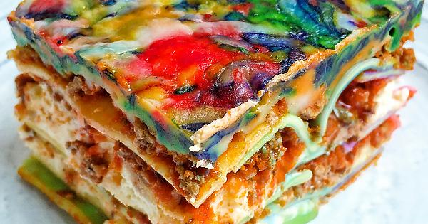

Astro Delight Fusion Lasagna
Back to Recipe List

Embark on an Epic Gastronomic Voyage with Astro Delight Fusion Lasagna!
Embark on a gastronomic journey that transcends the boundaries of our world with Cosmic Fusion Lasagna. This extraordinary dish combines layers of intergalactic flavors and textures to create a truly cosmic experience. Picture tender lasagna noodles interlaced with a fusion of exotic vegetables sourced from distant planets, each contributing its own unique essence. The celestial sauce, simmered to perfection, is crafted from a blend of cosmic herbs and spices, transporting your taste buds to uncharted culinary dimensions. Embrace the harmonious interplay of flavors as the ricotta cheese, mozzarella, and Parmesan meld together in a cosmic dance of creamy indulgence. With every bite, you'll embark on a sensory voyage, savoring the extraordinary taste sensations that this otherworldly lasagna has to offer. Get ready to immerse yourself in an intergalactic feast with Cosmic Fusion Lasagna!
Ingredients
- Cosmic lasagna noodles - approximately 12 sheets
- Intergalactic ground protein substitute - 1 pound (450g)
- Alien-grown onions - 1, finely chopped
- Exquisite alien garlic cloves - 2, minced
- Celestial tomato sauce - 2 cups
- Crushed stardust tomatoes - 1 cup
- Cosmic tomato essence paste - 2 tablespoons
- Fusion of extraterrestrial herbs and spices - 1 teaspoon or to taste
- Stardust salt - 1 teaspoon
- Black pepper from the far reaches of the universe - ½ teaspoon
- Nebula-infused ricotta cheese - 2 cups
- Milky Way mozzarella cheese - 2 cups, shredded
- Shredded Nebula Parmesan cheese - ½ cup
- Celestial garnish of cosmic basil or stardust parsley (optional)
Steps
- Preheat the oven.
- Cook cosmic lasagna noodles and set aside.
- Cook intergalactic ground protein substitute with alien onions and exquisite garlic.
- Stir in celestial tomato sauce, crushed stardust tomatoes, cosmic tomato essence paste, herbs, salt, and black pepper.
- Blend Nebula-infused ricotta cheese with Milky Way mozzarella and shredded Nebula Parmesan.
- Layer sauce, noodles, and ricotta mixture in a galactic baking dish.
- Repeat layers, ending with sauce on top.
- Sprinkle remaining cheeses on top.
- Bake until cheese melts and creates a cosmic glow.
- Let it rest before serving.
- Optional: Garnish with cosmic basil or stardust parsley.
- Embark on a gastronomic voyage with Astro Delight Fusion Lasagna!
Back to Recipe List